Descripcion General del Proceso de Negocio de IA
Portada del capitulo.
Portada del capitulo.
Este capitulo describe el proceso de construccion de negocios de IA, como entrenar un modelo grande (el proceso completo de entrenamiento y ajuste fino), y como utilizar eficientemente un modelo grande.
Al completar este curso, sera capaz de:
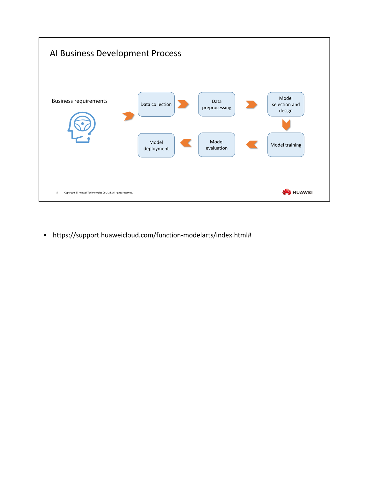
El flujo del proceso de desarrollo de IA incluye los siguientes pasos:
Referencia: https://support.huaweicloud.com/function-modelarts/index.html#
Los algoritmos de sistemas de recomendacion incluyen filtrado colaborativo, recomendacion basada en contenido, recomendacion basada en conocimiento y recomendacion hibrida.
Aplicaciones principales de la vision por computadora:
Procesamiento del Lenguaje Natural (NLP):
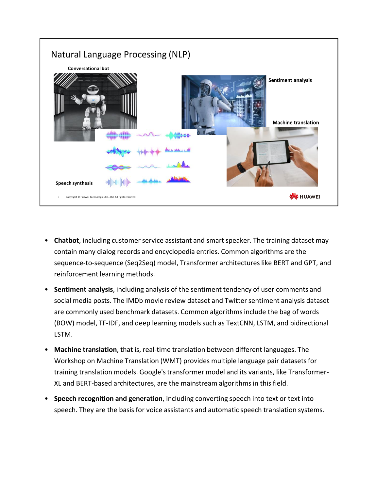
Este proceso elimina informacion incorrecta e innecesaria, como imagenes duplicadas, imagenes irrelevantes, elementos de texto duplicados, errores ortograficos y datos de usuario que estan duplicados o son anomalos.
Puede ser necesaria la extraccion de caracteristicas utiles de los datos sin procesar segun los requisitos del sistema de recomendacion. Tales caracteristicas incluyen informacion personal del usuario, atributos del objeto y comportamientos del usuario. El proposito de la ingenieria de caracteristicas es crear caracteristicas que puedan ayudar al modelo a comprender mejor los datos, mejorando la precision de la recomendacion.
Actualmente, CV y NLP no requieren esta operacion.
Para tareas de aprendizaje supervisado, es necesario etiquetar cada elemento de datos con la etiqueta correcta. Esto puede realizarse manualmente o usando herramientas automatizadas. La calidad y precision del etiquetado son cruciales para el efecto de entrenamiento del modelo.
Dividir los datos limpiados y etiquetados en conjuntos de entrenamiento, validacion y prueba. El conjunto de entrenamiento se usa para entrenar el modelo, el conjunto de validacion para ajustar los parametros del modelo y seleccionar el mejor modelo, y el conjunto de prueba para evaluar el rendimiento del modelo.
Preprocesar los datos, como normalizacion y codificacion, para facilitar su procesamiento por el modelo.
Despues de crear un conjunto de datos, realizar un analisis exhaustivo de datos para asegurar su calidad, diversidad y equilibrio. Ademas, es necesario evaluar si el conjunto de datos cumple con los objetivos esperados y prepararse para apoyar el entrenamiento del modelo.
Seleccionar una arquitectura de modelo de aprendizaje profundo adecuada segun el tipo de tarea y las caracteristicas de los datos. Por ejemplo:
Disenar la jerarquia del modelo, incluyendo la capa de entrada, capa oculta (capa convolucional, capa recurrente, capa de autoatencion, etc.), capa de salida, y capas auxiliares como la posible capa de agrupamiento (pooling) y capa de normalizacion.
Determinar los hiperparametros del modelo, como la tasa de aprendizaje, tamano del lote (batch size), fuerza de regularizacion, numero de capas, numero de nodos y tasa de dropout.
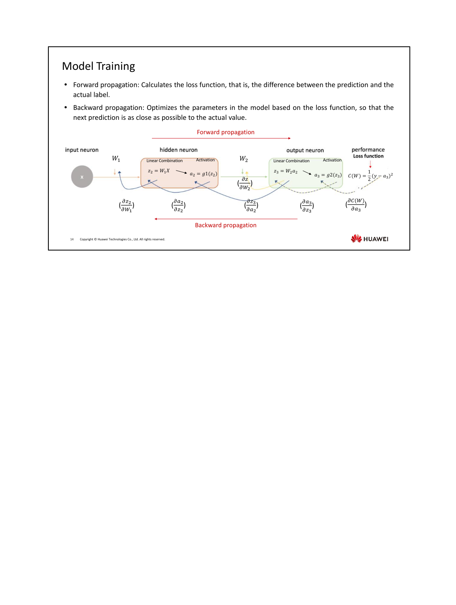
Propagacion hacia adelante:
z2 = W1*X → a2 = g1(z2) → z3 = W2*a2 → a3 = g2(z3) → C(W) = 1/2 * (y - a3)^2
Retropropagacion:
Se calculan las derivadas parciales de la funcion de costo respecto a cada peso, propagando el error hacia atras a traves de la red para actualizar los parametros.
Flujo: Conversion del modelo → Cuantizacion y compresion del modelo → Empaquetado del modelo y encapsulamiento en una API
El formato de archivo del modelo entrenado en PyTorch es PTH, mientras que ONNX es un formato de intercambio desarrollado por empresas de IA.
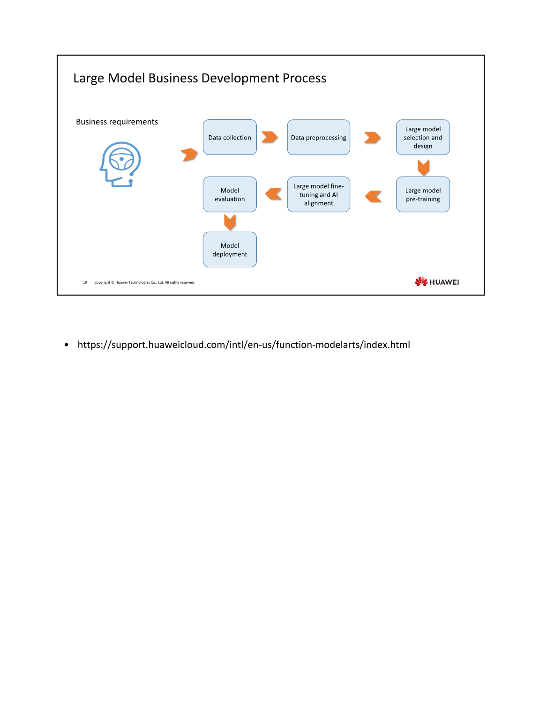
Flujo del proceso:
Referencia: https://support.huaweicloud.com/intl/en-us/function-modelarts/index.html
Los modelos grandes frecuentemente tienen miles de millones o incluso mas parametros y pueden ocupar cientos de gigabytes o mas.
Por ejemplo, se estima segun la documentacion que GPT-3 tiene aproximadamente 175 mil millones de parametros. LLaMA2 de Meta AI viene en tres tamanos: 7 mil millones (7B), 13 mil millones (13B) y 70 mil millones (70B) de parametros.
Los modelos grandes tienen muchos mas parametros que los modelos tradicionales, por lo que necesitan conjuntos de datos de entrenamiento mas grandes. Aprender de mas datos ayuda a estos modelos a mejorar.
La siguiente tabla muestra la distribucion de datos de entrenamiento de varios modelos grandes tipicos:
| Modelo | Fuentes de datos | Proporcion | Tokens |
|---|---|---|---|
| GPT-3 175B | CommonCrawl, Books1 y 2, WebText2, Wikipedia | 60%, 22%, 8%, 8% y 3% | 300B |
| LLaMA-65B | CommonCrawl, C4, Github, Wikipedia, Books, ArXiv, StackExchange | 67%, 15%, 4.5%, 4.5%, 2.5% y 2.0% | 1.4T |
| GLM-130B | Pile, Chinese Wudao, Corpora... | - | 400B |
Flujo: Descripcion de datos → Fuente de datos → Procesamiento de datos (Filtrado, Deduplicacion) → Datos de entrenamiento
Los conjuntos de datos necesitan ser limpiados para eliminar errores y duplicados. Los datos originales de GPT-3 eran de 45 TB, pero solo quedaron 570 GB despues del filtrado. La proporcion de datos utilizados varia segun la calidad de los datos.
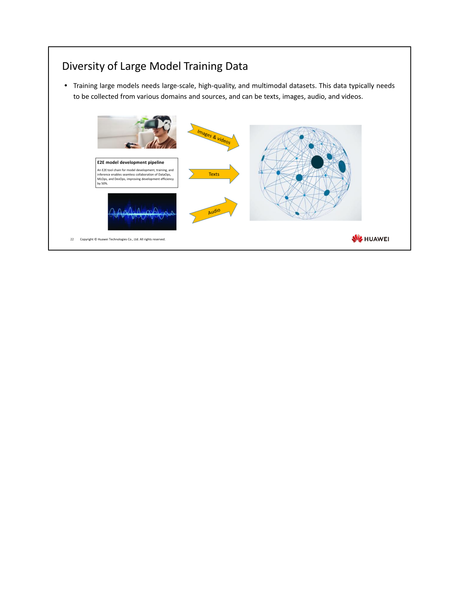
Entrenar modelos grandes requiere conjuntos de datos a gran escala, de alta calidad y multimodales. Estos datos tipicamente necesitan ser recopilados de diversos dominios y fuentes, y pueden ser textos, imagenes, audio y videos.
Pipeline de desarrollo de modelos E2E (extremo a extremo):
Una cadena de herramientas E2E para desarrollo, entrenamiento e inferencia de modelos permite la colaboracion fluida de DataOps, MLOps y DevOps, mejorando la eficiencia de desarrollo en un 50%.
Tipos de datos: Textos, Imagenes, Audio, Videos, etc.
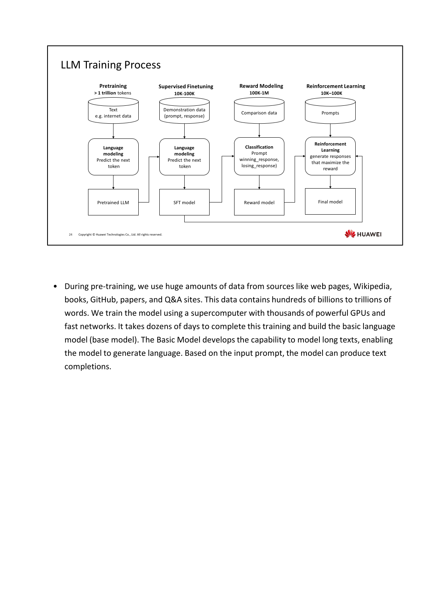
El proceso de entrenamiento de modelos de lenguaje grandes consta de las siguientes fases:
Durante el pre-entrenamiento, usamos enormes cantidades de datos de fuentes como paginas web, Wikipedia, libros, GitHub, articulos y sitios de preguntas y respuestas. Estos datos contienen de cientos de miles de millones a billones de palabras. Entrenamos el modelo usando una supercomputadora con miles de GPUs potentes y redes rapidas. Se necesitan decenas de dias para completar este entrenamiento y construir el modelo base de lenguaje. El modelo base desarrolla la capacidad de modelar textos largos, permitiendole generar lenguaje. Basandose en el prompt de entrada, el modelo puede producir completaciones de texto.
Las fuentes de datos de los modelos grandes son diversas, e incluyen principalmente las siguientes:
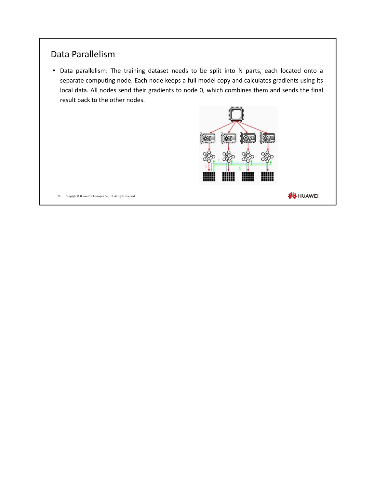
Paralelismo de datos: El conjunto de datos de entrenamiento se divide en N partes, cada una ubicada en un nodo de computo separado. Cada nodo mantiene una copia completa del modelo y calcula los gradientes usando sus datos locales. Todos los nodos envian sus gradientes al nodo 0, que los combina y envia el resultado final de vuelta a los otros nodos.
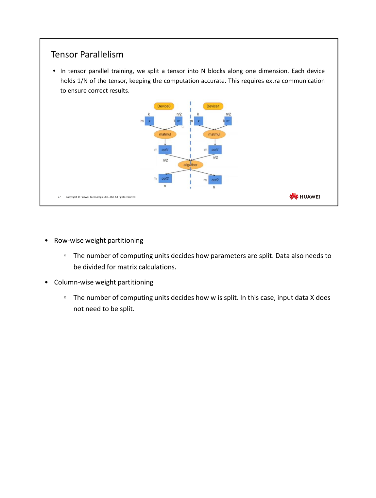
En el entrenamiento con paralelismo de tensores, dividimos un tensor en N bloques a lo largo de una dimension. Cada dispositivo contiene 1/N del tensor, manteniendo la computacion precisa. Esto requiere comunicacion adicional para asegurar resultados correctos.
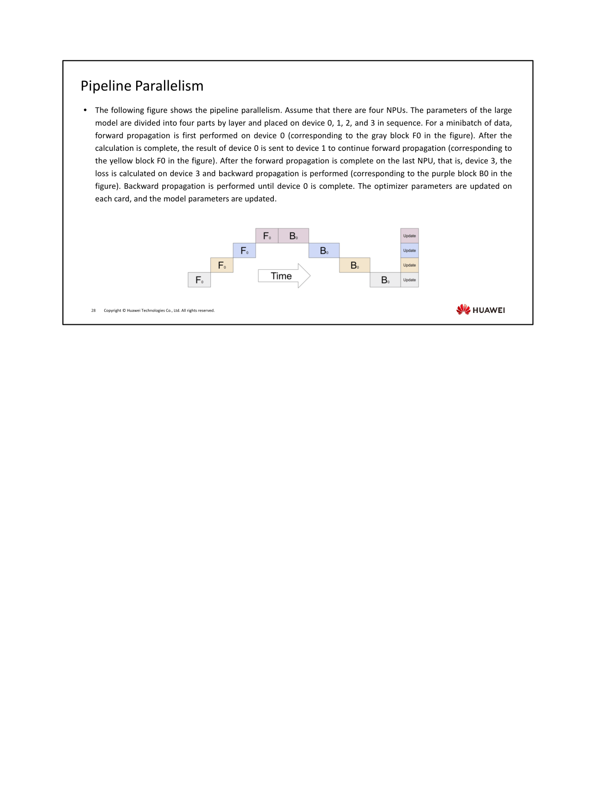
La siguiente figura muestra el paralelismo de pipeline. Supongamos que hay cuatro NPUs. Los parametros del modelo grande se dividen en cuatro partes por capa y se colocan en los dispositivos 0, 1, 2 y 3 en secuencia.
Para un minilote de datos, primero se realiza la propagacion hacia adelante en el dispositivo 0 (correspondiente al bloque gris F0). Despues de completar el calculo, el resultado del dispositivo 0 se envia al dispositivo 1 para continuar la propagacion hacia adelante (bloque amarillo F0). Despues de completar la propagacion hacia adelante en la ultima NPU (dispositivo 3), se calcula la perdida en el dispositivo 3 y se realiza la retropropagacion (bloque purpura B0). La retropropagacion se realiza hasta completar en el dispositivo 0. Los parametros del optimizador se actualizan en cada tarjeta y se actualizan los parametros del modelo.
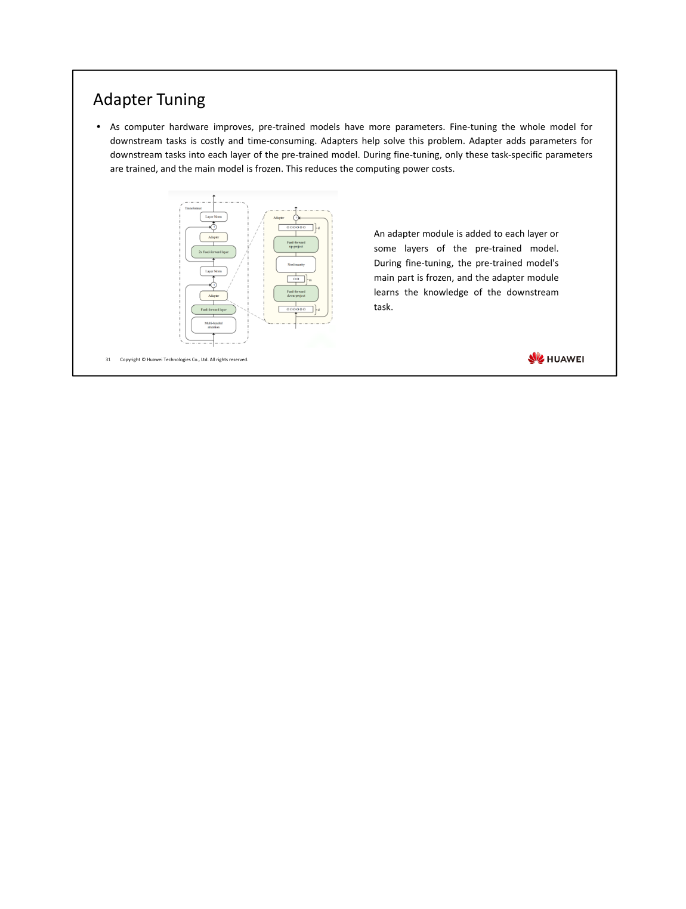
A medida que el hardware mejora, los modelos pre-entrenados tienen mas parametros. Ajustar finamente todo el modelo para tareas especificas es costoso y lleva mucho tiempo. Los adaptadores ayudan a resolver este problema.
El adapter agrega parametros para tareas especificas en cada capa del modelo pre-entrenado. Durante el ajuste fino, solo se entrenan estos parametros especificos de la tarea, y el modelo principal se congela. Esto reduce los costos de poder de computo.
Se agrega un modulo adaptador a cada capa o algunas capas del modelo pre-entrenado. Durante el ajuste fino, la parte principal del modelo pre-entrenado se congela y el modulo adaptador aprende el conocimiento de la tarea especifica.
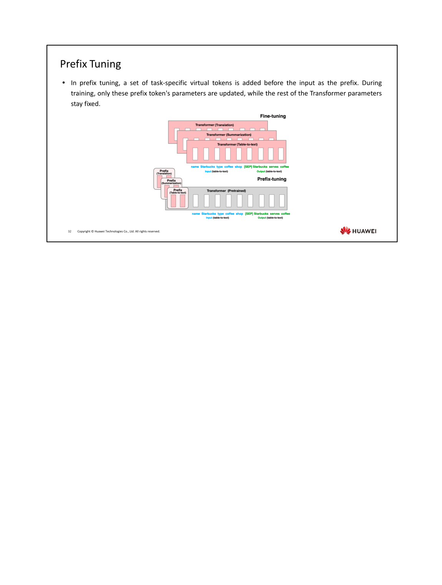
En el ajuste de prefijo, se agrega un conjunto de tokens virtuales especificos de la tarea antes de la entrada como prefijo. Durante el entrenamiento, solo se actualizan los parametros de estos tokens de prefijo, mientras que el resto de los parametros del Transformer permanecen fijos.
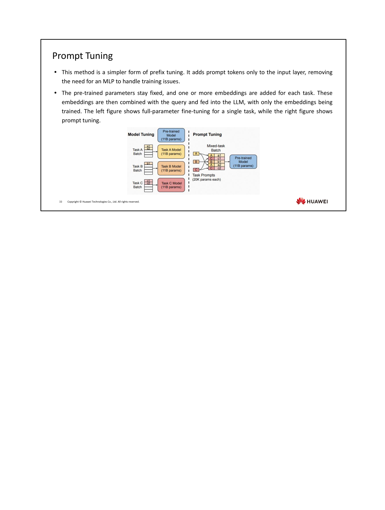
Este metodo es una forma mas simple del ajuste de prefijo. Agrega tokens de prompt solo a la capa de entrada, eliminando la necesidad de un MLP para manejar problemas de entrenamiento.
Los parametros pre-entrenados permanecen fijos, y se agregan uno o mas embeddings para cada tarea. Estos embeddings se combinan con la consulta y se alimentan al LLM, entrenandose solo los embeddings.
La figura izquierda muestra el ajuste fino de parametros completos para una sola tarea, mientras que la figura derecha muestra el ajuste de prompts.
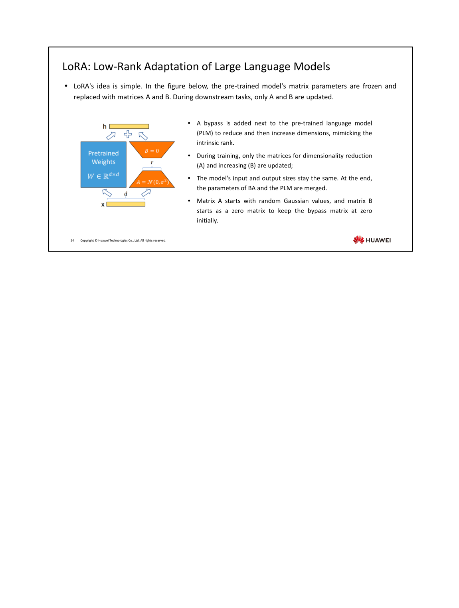
La idea de LoRA es simple. Los parametros de la matriz del modelo pre-entrenado se congelan y se reemplazan con las matrices A y B. Durante las tareas especificas, solo se actualizan A y B.
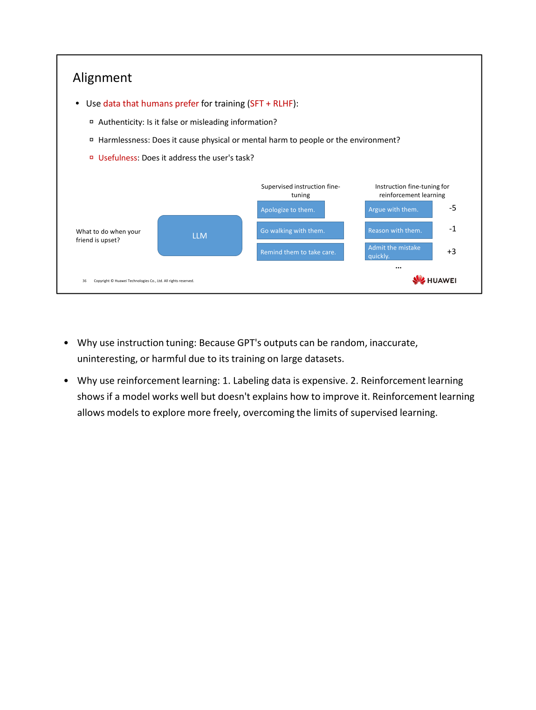
Usar datos que los humanos prefieren para el entrenamiento (SFT + RLHF):
Ejemplo: ¿Que hacer cuando tu amigo esta molesto?
Ajuste fino supervisado con instrucciones:
Ajuste fino con aprendizaje por refuerzo: Puntuaciones: -5, -1, +3...
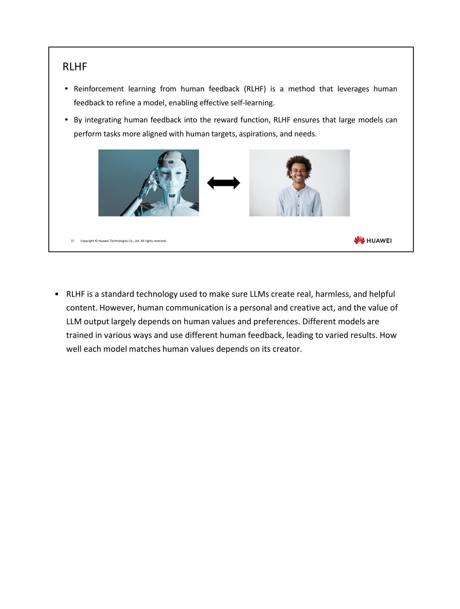
El aprendizaje por refuerzo con retroalimentacion humana (RLHF) es un metodo que aprovecha la retroalimentacion humana para refinar un modelo, permitiendo un autoaprendizaje efectivo.
Al integrar la retroalimentacion humana en la funcion de recompensa, RLHF asegura que los modelos grandes puedan realizar tareas mas alineadas con los objetivos, aspiraciones y necesidades humanas.
RLHF es una tecnologia estandar utilizada para asegurar que los LLMs creen contenido real, inofensivo y util. Sin embargo, la comunicacion humana es un acto personal y creativo, y el valor de la salida del LLM depende en gran medida de los valores y preferencias humanas. Diferentes modelos se entrenan de diversas maneras y usan diferente retroalimentacion humana, lo que lleva a resultados variados. Que tan bien cada modelo se alinea con los valores humanos depende de su creador.
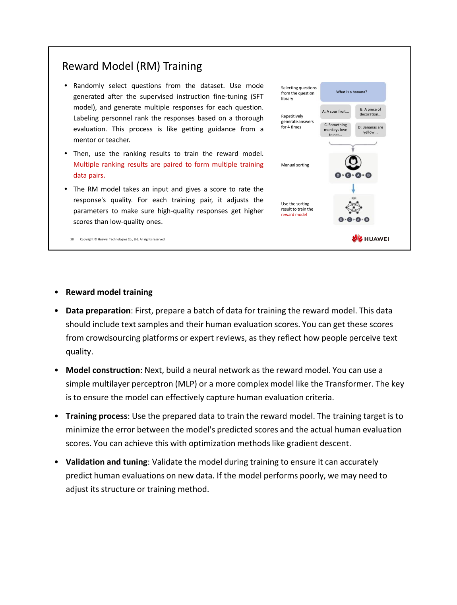
Se seleccionan preguntas aleatoriamente del conjunto de datos. Se usa el modelo generado despues del ajuste fino supervisado con instrucciones (modelo SFT), y se generan multiples respuestas para cada pregunta. El personal de etiquetado clasifica las respuestas segun una evaluacion exhaustiva. Este proceso es como recibir orientacion de un mentor o profesor.
Luego, se usan los resultados de clasificacion para entrenar el modelo de recompensa. Multiples resultados de clasificacion se emparejan para formar multiples pares de datos de entrenamiento.
El modelo RM toma una entrada y da una puntuacion para calificar la calidad de la respuesta. Para cada par de entrenamiento, ajusta los parametros para asegurar que las respuestas de alta calidad obtengan puntuaciones mas altas que las de baja calidad.
Ejemplo: ¿Que es un platano? → Se generan 4 respuestas (A, B, C, D) → Ordenamiento manual → Se usa el resultado para entrenar el modelo de recompensa.
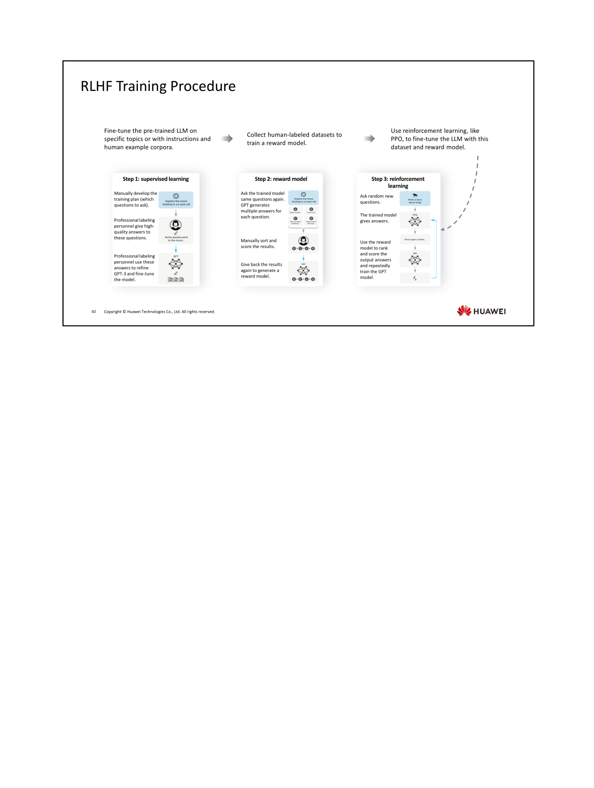
Ajustar finamente el LLM pre-entrenado en temas especificos o con instrucciones y corpus de ejemplos humanos.
Recopilar conjuntos de datos etiquetados por humanos para entrenar un modelo de recompensa.
Usar aprendizaje por refuerzo, como PPO, para ajustar finamente el LLM con este conjunto de datos y modelo de recompensa.
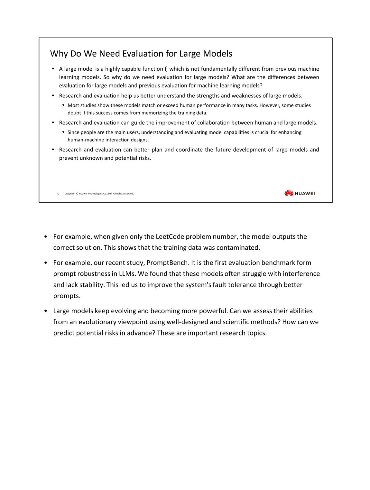
Un modelo grande es una funcion f altamente capaz, que no es fundamentalmente diferente de los modelos anteriores de aprendizaje automatico. Entonces, ¿por que necesitamos evaluacion para modelos grandes?
Los modelos de lenguaje grandes pueden manejar muchas tareas complejas de lenguaje natural, a diferencia de los algoritmos tradicionales. Por lo tanto, la evaluacion del modelo debe realizarse desde multiples dimensiones, clasificadas en tres aspectos:
El prompting de cero ejemplos es una tecnica donde el usuario no proporciona demostraciones relacionadas con el resultado de la tarea, y directamente le pide al modelo de lenguaje que proporcione respuestas relacionadas con la tarea.
Los modelos de lenguaje grandes son capaces de prompting de cero ejemplos, pero su exito depende de la complejidad de la tarea y del alcance del conocimiento existente.
Formato:
P: <Pregunta>? R:
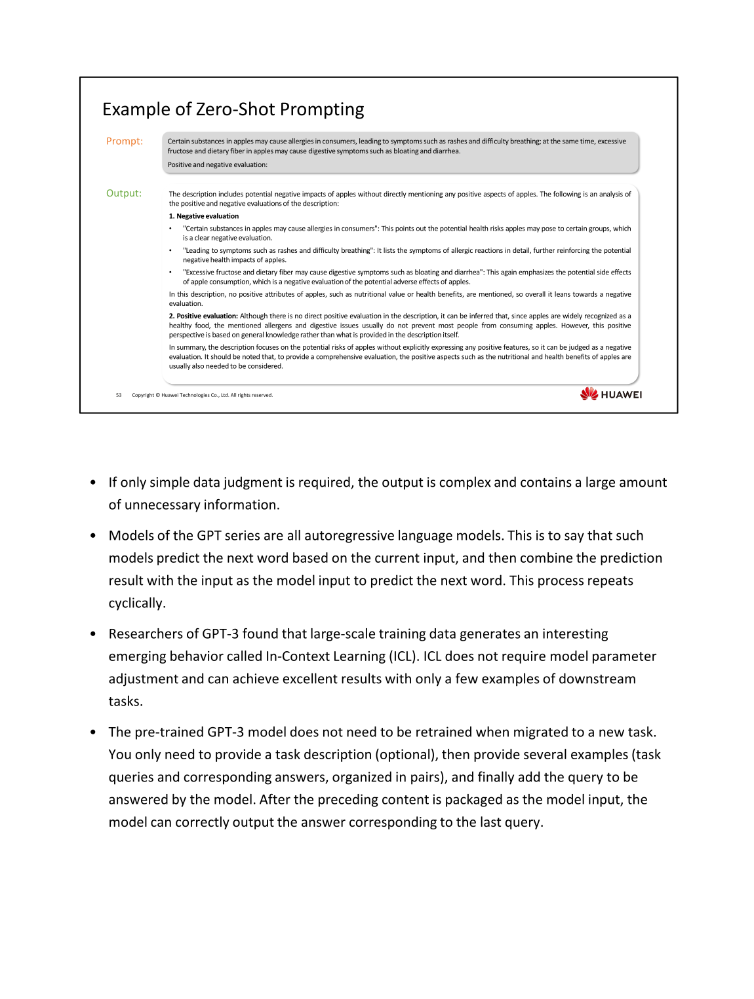
Prompt:
"Ciertas sustancias en las manzanas pueden causar alergias en los consumidores, provocando sintomas como erupciones cutaneas y dificultad para respirar; al mismo tiempo, el exceso de fructosa y fibra dietetica en las manzanas puede causar sintomas digestivos como hinchazon y diarrea."
Salida:
Evaluacion positiva y negativa: La descripcion incluye posibles impactos negativos de las manzanas sin mencionar directamente aspectos positivos. Analisis detallado:
En resumen, la descripcion se centra en los riesgos potenciales sin expresar caracteristicas positivas, por lo que se juzga como evaluacion negativa.
Aunque los modelos de lenguaje grandes demuestran impresionantes capacidades de cero ejemplos, aun tienen un rendimiento deficiente en tareas mas complejas con configuraciones de cero ejemplos.
El prompting de pocos ejemplos puede usarse como tecnica para habilitar el aprendizaje contextual, proporcionando demostraciones en el prompt para guiar al modelo a lograr un mejor rendimiento. Las demostraciones son condiciones para los ejemplos subsiguientes, y se espera que el modelo genere respuestas.
Los ejemplos (few) pueden seleccionarse aleatoriamente.
Formato:
P: <Pregunta>? R: <Respuesta> P: <Pregunta>? R: <Respuesta> P: <Pregunta>? R: <Respuesta> P: <Pregunta>? R:
One-shot es un caso especial de few-shot.
Prompt:
"Ciertas sustancias en las manzanas pueden causar alergias en los consumidores, provocando sintomas como erupciones cutaneas y dificultad para respirar; al mismo tiempo, el exceso de fructosa y fibra dietetica puede causar sintomas digestivos como hinchazon y diarrea."
Evaluacion: Negativa
"Los platanos son una fruta muy beneficiosa para el cuerpo humano."
Evaluacion: Positiva
"El durian es dulce y delicioso, con un valor nutricional muy alto."
Evaluacion:
Salida: Positiva
El prompting de cadena de pensamiento (CoT) permite el razonamiento complejo al introducir pasos intermedios de razonamiento. Expande una pregunta paso a paso y retiene la informacion de contexto de preguntas anteriores en cada respuesta. CoT hace que una conversacion sea rica en contenido y coherente.
Tipos principales de CoT:
Caracteristicas:
En este modo, se proporcionan al modelo un pequeno numero de ejemplos, cada uno de los cuales incluye un proceso de inferencia de alta calidad (escrito a mano o generado por el modelo).
Prompt:
La suma de los numeros impares en este grupo es par: 4, 8, 9, 15, 12, 2, 1.
R: Sumar todos los numeros impares (9, 15, 1) da 25. La respuesta es Falso.
La suma de los numeros impares en este grupo es par: 17, 10, 19, 4, 8, 12, 24.
R: Sumar todos los numeros impares (17, 19) da 36. La respuesta es Verdadero.
La suma de los numeros impares en este grupo es par: 16, 11, 14, 4, 8, 13, 24.
R: Sumar todos los numeros impares (11, 13) da 24. La respuesta es Verdadero.
La suma de los numeros impares en este grupo es par: 17, 9, 10, 12, 13, 4, 2.
R: Sumar todos los numeros impares (17, 9, 13) da 39. La respuesta es Falso.
La suma de los numeros impares en este grupo es par: 15, 32, 5, 13, 82, 7, 1.
R:
Salida: Sumar todos los numeros impares (15, 5, 13, 7, 1) da 41. La respuesta es Falso.
El metodo zero-shot-CoT agrega el prompt "Pensemos paso a paso" antes de cada respuesta del modelo de lenguaje para guiar al modelo a pensar paso a paso.
1. (Pregunta de respuesta multiple) El prompt de cadena de pensamiento (CoT) implementa capacidades de razonamiento complejo al introducir pasos intermedios de razonamiento. Comparado con few-shot-CoT, ¿cuales son las ventajas de zero-shot-CoT?
Respuesta: B, C, D
Este capitulo presenta el proceso completo de servicio de IA y construccion de modelos fundacionales, y describe como usar la ingenieria de prompts para utilizar eficientemente los modelos fundacionales y obtener respuestas mas precisas.

Llevar lo digital a cada persona, cada hogar y cada organizacion para construir un mundo inteligente donde todo este conectado.
Copyright © Huawei Technologies Co., Ltd. Todos los derechos reservados.
La informacion en este documento puede contener declaraciones predictivas, incluyendo, sin limitacion, declaraciones sobre los futuros resultados financieros y operativos, la futura cartera de productos, nueva tecnologia, etc. Hay una serie de factores que podrian causar que los resultados reales y desarrollos difieran materialmente de los expresados o implicados en las declaraciones predictivas. Por lo tanto, dicha informacion se proporciona solo como referencia y no constituye ni una oferta ni una aceptacion. Huawei puede cambiar la informacion en cualquier momento sin previo aviso.
Portada del capitulo.
En una epoca de avance tecnologico abrumador, la inteligencia artificial (IA) es una fuerza increible para el cambio. Desde asistentes inteligentes hasta conduccion autonoma, y desde pronosticos meteorologicos hasta robots inteligentes, la IA se aplica de manera casi omnipresente, convirtiendola en un nuevo motor para el progreso y desarrollo social.
Al completar este curso, sera capaz de comprender:
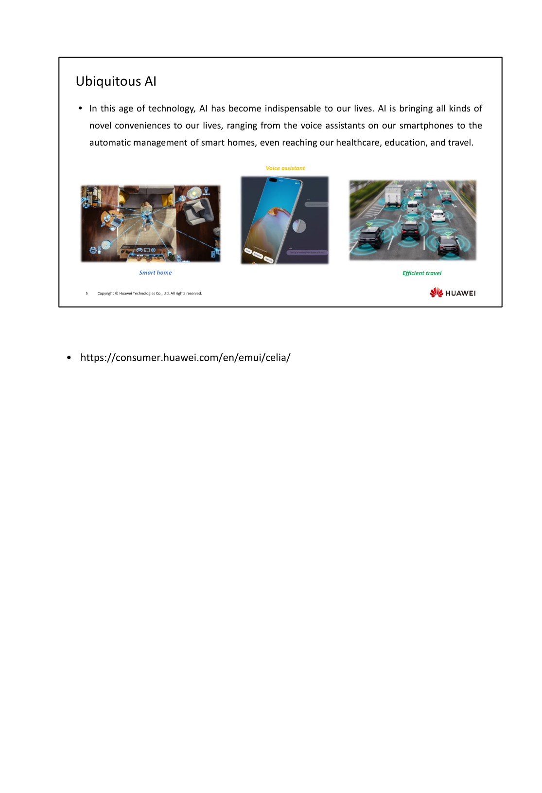
En esta era tecnologica, la IA se ha vuelto indispensable en nuestras vidas. La IA esta trayendo todo tipo de nuevas comodidades a nuestras vidas, desde los asistentes de voz en nuestros telefonos inteligentes hasta la gestion automatica de hogares inteligentes, llegando incluso a nuestra atencion medica, educacion y transporte.
Referencia: https://consumer.huawei.com/en/emui/celia/
Celia es un asistente inteligente. Impulsada por modelos fundacionales, Celia es capaz de proporcionar soluciones para cada escenario.
Interaccion basada en dialogo natural, convirtiendola en una herramienta eficiente y conveniente.
Referencia: https://consumer.huawei.com/en/emui/celia/
Donde quiera que estes y lo que sea que estes haciendo, con la ayuda de Celia, puedes completar tus tareas cotidianas rapida y facilmente. ¡Se productivo y disfruta tu dia!
Celia tambien facilita el entretenimiento. Encuentra rapidamente articulos que deseas comprar, reproduce tus videos favoritos y controla tu musica sin tomar el telefono. ¡Relajate y diviertete!
Celia es tambien el asistente de viaje que buscas. Pidele a Celia que traduzca tu menu, planifique tu dia, tome fotos por ti y mucho mas. Celia siempre esta ahi para satisfacer tus necesidades.
El hogar inteligente combina sin problemas la tecnologia moderna con la vida en el hogar, redefiniendo nuestros espacios personales con un estilo de vida elevado de conveniencia.
A traves de IoT altamente avanzado, algoritmos y analitica de big data, los hogares inteligentes conectan una variedad de dispositivos en un ecosistema inteligente automatizado y personalizado, brindando a los usuarios conveniencia, comodidad y seguridad.
La IA conecta los electrodomesticos para crear un ecosistema inteligente.
Cuando entras a tu hogar, luces calidas se encienden gradualmente desde el pasillo hasta la sala de estar. El sistema de control ambiental inteligente ajusta automaticamente la temperatura ambiente, la humedad y la calidad del aire segun tus preferencias. Deja que el hogar se cuide solo y relajate despues de un largo dia.
Despertar toda la casa con el toque de un interruptor.
Iluminando tu camino: Por la noche, las luces del pasillo se encienden automaticamente para seguir tu camino, sin necesidad de control manual.
Disfrutar de la luz del sol: Durante el dia, los toldos se controlan en grupos para ajustar la intensidad de la luz, asegurando que las habitaciones esten llenas de luz suave.
Reconocimiento 3D con IA:
Las camaras se encienden automaticamente cada vez que sales por la puerta principal, permitiendote vigilar las cosas mientras estas fuera. Si alguien entra, activaran las alarmas instantaneamente.
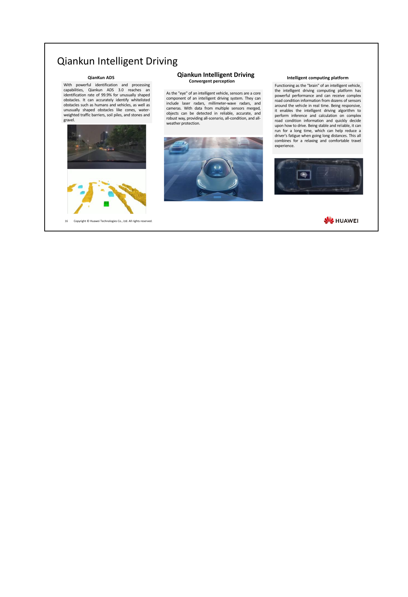
Con potentes capacidades de identificacion y procesamiento, Qiankun ADS alcanza una tasa de identificacion del 99.9% para obstaculos de forma inusual. Puede identificar con precision obstaculos de la lista blanca como humanos y vehiculos, asi como obstaculos de formas inusuales como conos, barreras de trafico con agua, montones de tierra, piedras y grava.
Como el "ojo" de un vehiculo inteligente, los sensores son un componente central del sistema de conduccion inteligente. Pueden incluir radares laser, radares de onda milimetrica y camaras. Con datos de multiples sensores fusionados, los objetos pueden detectarse de manera confiable, precisa y robusta, proporcionando proteccion para todos los escenarios, todas las condiciones y todo tipo de clima.
Funcionando como el "cerebro" de un vehiculo inteligente, la plataforma de computacion de conduccion inteligente tiene un rendimiento potente y puede recibir informacion compleja de condiciones de carretera de decenas de sensores alrededor del vehiculo en tiempo real. Siendo receptiva, permite que el algoritmo de conduccion inteligente realice inferencia y calculo sobre informacion compleja de condiciones de carretera y decida rapidamente como conducir. Siendo estable y confiable, puede funcionar por mucho tiempo, lo que puede ayudar a reducir la fatiga del conductor en viajes largos.
El sistema operativo automotriz HarmonyOS redefine la cabina inteligente. Las capacidades de voz y vision de Celia hacen que los viajes sean mas inteligentes. El sistema operativo inteligente conecta personas, sistemas de audio y dispositivos. Cientos de aplicaciones automotrices y audio en el vehiculo ofrecen una nueva experiencia de entretenimiento movil.
La recomendacion inteligente es un servicio de sistema de recomendacion construido sobre IA. La recomendacion impulsada por IA puede integrar automaticamente big data y obtener continuamente informacion sobre los usuarios finales a traves del analisis y filtrado de datos, empoderando a las empresas para desarrollarse en organizaciones de toma de decisiones basadas en datos.
Los grafos de conocimiento son bases de conocimiento utilizadas en sistemas de recomendacion inteligente. Son esencialmente redes estructuradas que almacenan relaciones entre entidades. Contienen una gran cantidad de informacion de fondo sobre objetos objetivo y relaciones entre objetos en sistemas de recomendacion. Los grafos de conocimiento proporcionan perfiles precisos de objetos objetivo, como comportamiento del usuario, intereses y requisitos, para implementar coincidencia precisa y recomendacion dirigida, logrando recomendacion personalizada especifica por escenario y tarea.
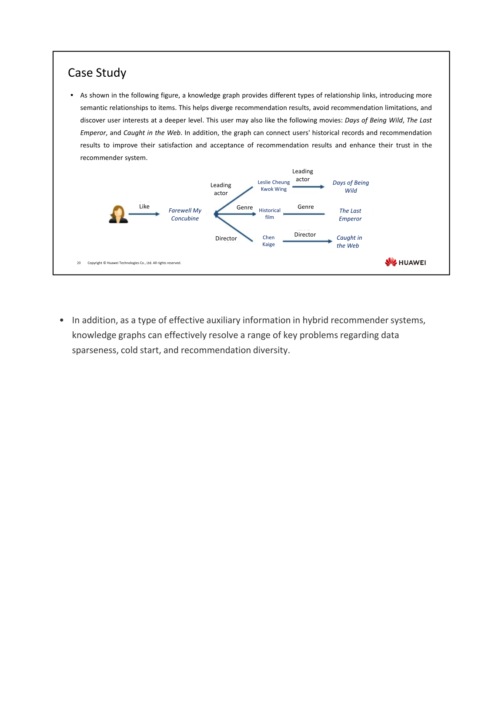
Como se muestra en la figura, un grafo de conocimiento proporciona diferentes tipos de enlaces de relacion, introduciendo mas relaciones semanticas a los elementos. Esto ayuda a diversificar los resultados de recomendacion, evitar limitaciones de recomendacion y descubrir intereses del usuario a un nivel mas profundo.
Ejemplo: Un usuario al que le gusta "Adios a Mi Concubina" (pelicula con Leslie Cheung como actor principal, dirigida por Chen Kaige, genero: pelicula historica) tambien podria gustarle: "Dias de ser Salvaje", "El Ultimo Emperador" y "Atrapados en la Red".
Ademas, el grafo puede conectar los registros historicos de los usuarios y los resultados de recomendacion para mejorar su satisfaccion y aceptacion de los resultados de recomendacion y aumentar su confianza en el sistema de recomendacion.
Ademas, como un tipo de informacion auxiliar efectiva en sistemas de recomendacion hibridos, los grafos de conocimiento pueden resolver eficazmente una serie de problemas clave relacionados con la escasez de datos, el arranque en frio y la diversidad de recomendaciones.
Los robots humanoides estan disenados para tener formas y funciones similares a las humanas, incluyendo percepcion sensorial y cognicion.
Probablemente se convertiran en los portadores mas valiosos de la IA corporizada. Combinados con la inteligencia artificial general en rapido desarrollo y los modelos fundacionales, los robots humanoides permitiran que las maquinas interoperen e interactuen con los entornos de una manera mas intuitiva e inteligente. Seran capaces de realizar una amplia variedad de tareas complejas al igual que los humanos.
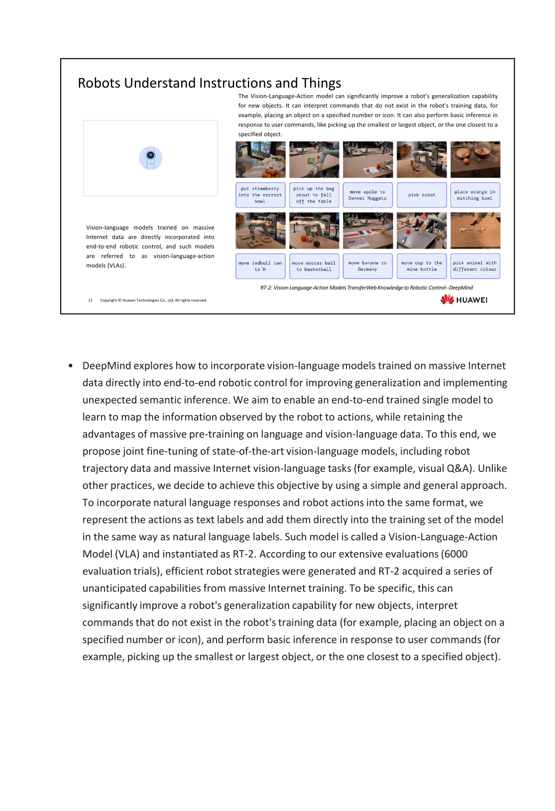
El modelo Vision-Lenguaje-Accion (VLA) puede mejorar significativamente la capacidad de generalizacion de un robot para nuevos objetos. Puede interpretar comandos que no existen en los datos de entrenamiento del robot, por ejemplo, colocar un objeto en un numero o icono especificado. Tambien puede realizar inferencia basica en respuesta a comandos del usuario, como recoger el objeto mas pequeno o mas grande, o el mas cercano a un objeto especificado.
Los modelos de vision-lenguaje entrenados con datos masivos de Internet se incorporan directamente en el control robotico de extremo a extremo, y dichos modelos se denominan modelos de vision-lenguaje-accion (VLAs).
RT-2: Modelos Vision-Lenguaje-Accion Transfieren Conocimiento Web al Control Robotico -- DeepMind
DeepMind explora como incorporar modelos de vision-lenguaje entrenados con datos masivos de Internet directamente en el control robotico de extremo a extremo para mejorar la generalizacion e implementar inferencia semantica inesperada. Proponen el ajuste fino conjunto de modelos de vision-lenguaje de vanguardia, incluyendo datos de trayectoria del robot y tareas masivas de vision-lenguaje de Internet. Para incorporar respuestas de lenguaje natural y acciones del robot en el mismo formato, representan las acciones como etiquetas de texto y las agregan directamente al conjunto de entrenamiento del modelo. Tal modelo se llama Modelo de Vision-Lenguaje-Accion (VLA) e instanciado como RT-2.
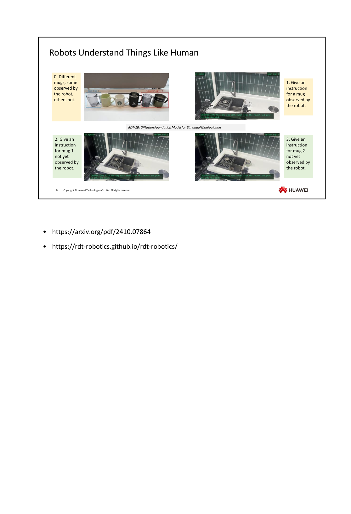
RDT-1B: Modelo Fundacional de Difusion para Manipulacion Bimanual
Proceso:
Referencias: https://arxiv.org/pdf/2410.07864 y https://rdt-robotics.github.io/rdt-robotics/
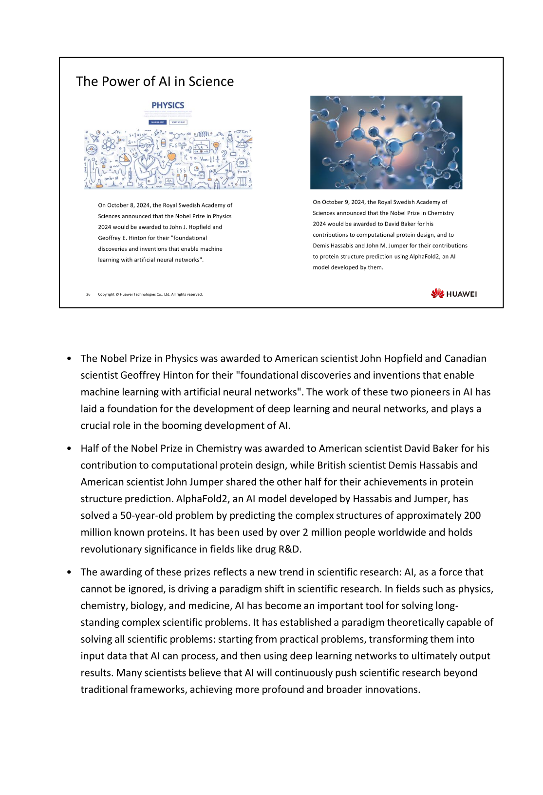
El 8 de octubre de 2024, la Real Academia Sueca de Ciencias anuncio que el Premio Nobel de Fisica 2024 seria otorgado a John J. Hopfield y Geoffrey E. Hinton por sus "descubrimientos e invenciones fundamentales que permiten el aprendizaje automatico con redes neuronales artificiales".
El 9 de octubre de 2024, la Real Academia Sueca de Ciencias anuncio que el Premio Nobel de Quimica 2024 seria otorgado a David Baker por sus contribuciones al diseno computacional de proteinas, y a Demis Hassabis y John M. Jumper por sus contribuciones a la prediccion de la estructura de proteinas usando AlphaFold2, un modelo de IA desarrollado por ellos.
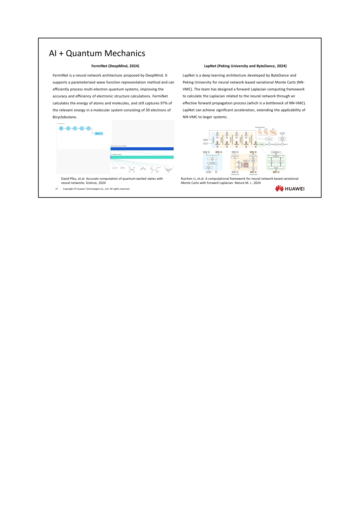
FermiNet es una arquitectura de red neuronal propuesta por DeepMind. Soporta un metodo de representacion de funcion de onda parametrizada y puede procesar eficientemente sistemas cuanticos multielectronicos, mejorando la precision y eficiencia de los calculos de estructura electronica. FermiNet calcula la energia de atomos y moleculas, y aun captura el 97% de la energia relevante en un sistema molecular que consiste de 30 electrones de Biciclobutano.
David Pfau, et al. Accurate computation of quantum excited states with neural networks. Science, 2024
LapNet es una arquitectura de aprendizaje profundo desarrollada por ByteDance y la Universidad de Pekin para Monte Carlo variacional basado en redes neuronales (NN-VMC). El equipo ha disenado un marco computacional de Laplaciano hacia adelante para calcular el Laplaciano relacionado con la red neuronal a traves de un proceso efectivo de propagacion hacia adelante (que es un cuello de botella de NN-VMC). LapNet puede lograr una aceleracion significativa, extendiendo la aplicabilidad de NN-VMC a sistemas mas grandes.
Ruichen Li, et al. A computational framework for neural network based variational Monte Carlo with Forward Laplacian. Nature M. I., 2024
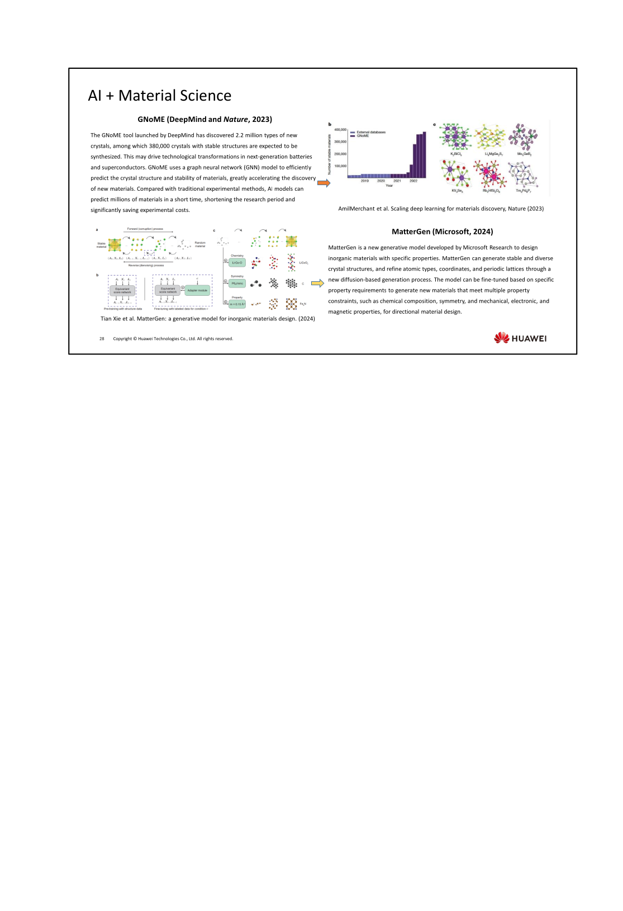
La herramienta GNoME lanzada por DeepMind ha descubierto 2.2 millones de tipos de nuevos cristales, entre los cuales 380,000 cristales con estructuras estables se espera que sean sintetizados. Esto puede impulsar transformaciones tecnologicas en baterias de proxima generacion y superconductores. GNoME utiliza un modelo de red neuronal de grafos (GNN) para predecir eficientemente la estructura cristalina y estabilidad de los materiales, acelerando enormemente el descubrimiento de nuevos materiales. Comparado con los metodos experimentales tradicionales, los modelos de IA pueden predecir millones de materiales en poco tiempo, acortando el periodo de investigacion y ahorrando significativamente los costos experimentales.
Amil Merchant et al. Scaling deep learning for materials discovery, Nature (2023)
MatterGen es un nuevo modelo generativo desarrollado por Microsoft Research para disenar materiales inorganicos con propiedades especificas. MatterGen puede generar estructuras cristalinas estables y diversas, y refinar tipos atomicos, coordenadas y redes periodicas a traves de un nuevo proceso de generacion basado en difusion. El modelo puede ser ajustado finamente segun requisitos de propiedades especificas para generar nuevos materiales que cumplan multiples restricciones de propiedades, como composicion quimica, simetria, y propiedades mecanicas, electronicas y magneticas, para el diseno direccional de materiales.
Tian Xie et al. MatterGen: a generative model for inorganic materials design. (2024)
DeePMD-kit es un paquete de aprendizaje profundo con gran potencial desarrollado por DP Technology. Integra modelado de primeros principios, metodos basados en datos representados por aprendizaje automatico y computacion de alto rendimiento para procesar problemas de dinamica molecular de escala ultra grande con la precision de primeros principios. DeePMD-kit puede mejorar significativamente la eficiencia de computo mientras mejora la precision de la simulacion, resolviendo la contradiccion entre precision y volumen de computo en los metodos de simulacion tradicionales.
Weinan E, et al. DeePMD-kit v2: A software package for deep potential models. 2023
1. Enumere algunas aplicaciones tipicas de IA.
Respuesta: Altavoz inteligente, aplicacion de texto a imagen, y similares.
Este capitulo describe como la IA transforma nuestras vidas, asi como las aplicaciones de IA en campos como la meteorologia y la robotica.
Llevar lo digital a cada persona, cada hogar y cada organizacion para construir un mundo inteligente donde todo este conectado.
Copyright © Huawei Technologies Co., Ltd. Todos los derechos reservados.
La informacion en este documento puede contener declaraciones predictivas, incluyendo, sin limitacion, declaraciones sobre los futuros resultados financieros y operativos, la futura cartera de productos, nueva tecnologia, etc. Hay una serie de factores que podrian causar que los resultados reales y desarrollos difieran materialmente de los expresados o implicados en las declaraciones predictivas. Por lo tanto, dicha informacion se proporciona solo como referencia y no constituye ni una oferta ni una aceptacion. Huawei puede cambiar la informacion en cualquier momento sin previo aviso.